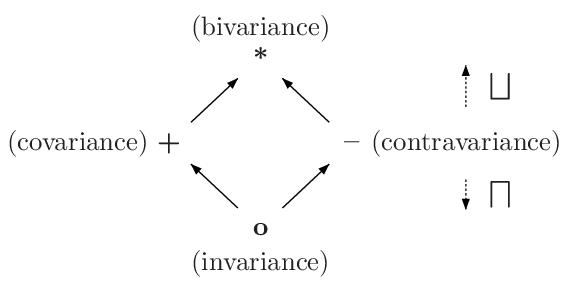

Taming the Wildcards - Interactive variance infering algorithm
This is an interactive version of the variance infering algorithm described in the paper Taming the Wildcards: Combining Definition- and Use-Site Variance by John Altidor, Shan Shan Huang, and Yannis Smaragdakis.
Class declarations
Enter the declarations of the classes you want to infer the variance of. The syntax is something between Java and C++:
class C<S, T> { T foo(D<? super S>); } class D<T> { void bar(T); }
Generated constraints
Raw constraints generated from the class declarations and expanded with the rules from the paper.
Simplified constraints
Constraints after simplification - removing redundant constraints and constraints that are implied by other constraints.
Most general solution
Explanation

Variance of class
C<T> describes how the subtype relationship between
C<A> and
C<B> relates to the subtype relationship between
A and
B .
Assuming B is a subtype of A
there are four possible variances:
- covariance (
+) -C<B>is subtype ofC<A> - cotravariance (
-) -C<A>is subtype ofC<B> - invariance (
o) -C<A>andC<B>are unrelated - bivariance (
*) -C<A>andC<B>are the same (equivalent) type. This happens only when the type parameter is not used or is impossible to use in the class.
Transform operator ⊗ is used to combine two variances into one. It is defined as follows:
- + ⊗ v = v
- * ⊗ v = *
- o ⊗ v = o
- - ⊗ - = +
- - ⊗ + = -
Join operator ⊔ takes upper bound of two variances on the lattice.
Intuitively - when instatiating a contravariant class with a covariant type parameter (or vice versa) we
remove all
covariant (return type) and contravariant (parameter type) uses of the type parameter.
This leaves us with a class that has no usages whatsoever of the type parameter, so it is bivariant.